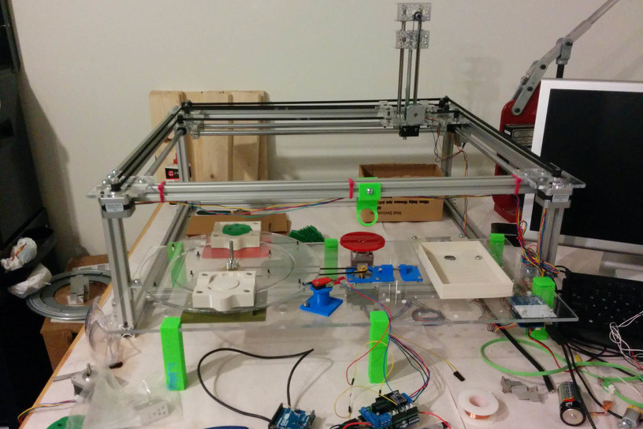

TurtleBot

During my internship at Rest Devices, I worked on programming an assembly robot for the turtle base overmold of their flagship product, the Mimo onesie. The robot had many independent parts all serviced by an overhead gantry. I worked on designing new features for the robot to work more efficiently and effectively so it could be reliable enough to run overnight. I optimized the robot to move seamlessly from one step to the next and significantly reduced the speed of each cycle. Much of the design challenge involved finding the optimal speed for each cycle of the robot while reducing the number of steps and decreasing time per step while still maintaining accuracy.
Learned how to build a complex machine with many serial processes.
Worked on a tight budget and learned to design with available materials and to adapt when necessary.
Considered how to design the system to be robust from the very start rather than only including it at the end.
Worked on a tight 10 week schedule to get the Turtlebot up and running.